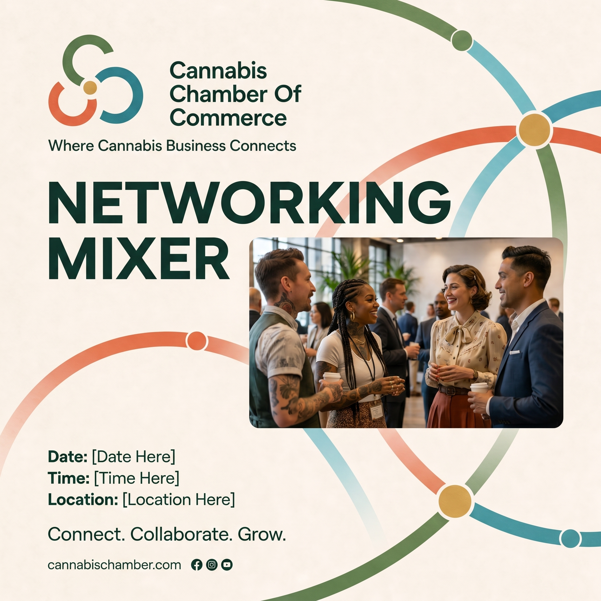
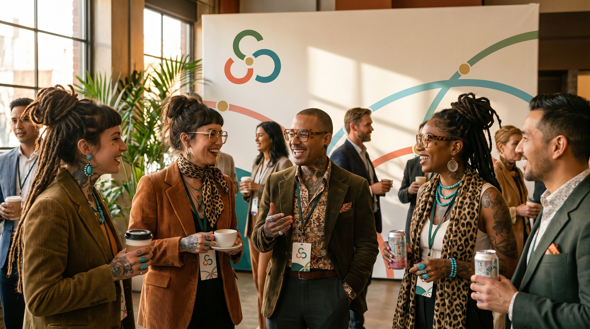
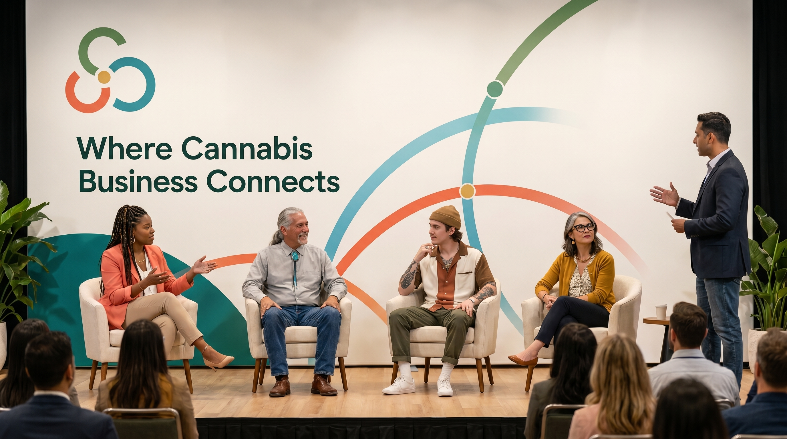
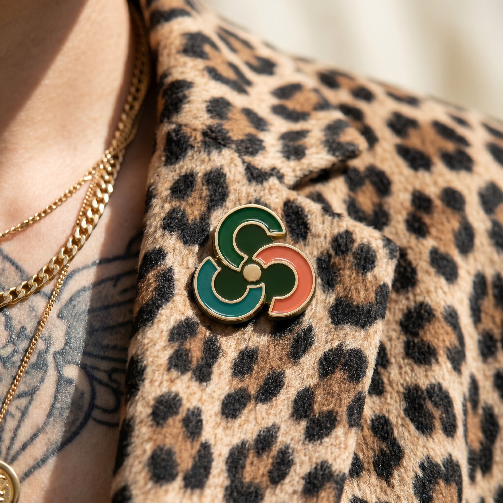

Photography
These ten frames set the look. Match the light, the clothes, the room, and the way the mark sits in the scene. Do not copy a face. No one in these frames is a real member.

Mixer announcement
A square for social. The wordmark, the arcs, and the event facts sit on cream. The photograph is not the whole post.

Workshop flyer
Print keeps a documentary photo of people working, with the mark and the event facts on cream.

Keynote
Cream backdrop, full name, speaker in front, audience in the foreground. The room is bright and the clothes are mixed.

Mixer
Daylight from the windows. People talking, badges on, one backdrop with the mark. A suit can be in the group. Most people are in mixed clothes.

Workshop
A white room, one person standing, the others writing. The mark is on the screen and on the mugs. Plants and paper keep the room alive.

Webinar
A 16:9 card. Cream field, arcs, a framed speaker, and the event facts. The portrait is one ingredient.

Recognition
A handoff in warm light. The moment lifts a member. Keep it free of contest staging and trophy poses.

Panel
The line "Where cannabis business connects." on the backdrop, with the panel and a moderator. Faces are lit. The graphic stays behind them.

Pin
A close crop. The mark is an object on a person: enamel, leopard, gold, a tattoo at the edge. Sun on the cloth.

Expo booth
The full name on the backdrop, staff at the counter, pins and print on the table. Wide enough to see the booth and the people.
Style: Common Ground business documentary. Bright rooms, real Chamber moments, member-led panels, chapter workshops, conference stages, expo booths, credentials, sponsor walls, and follow-up conversations. The camera should make membership feel practical, active, and human.
Tone: People-first and business-serious. Subjects are operators, partners, chapter leaders, speakers, sponsors, and members doing useful work together, not consumers posing around cannabis products. The feeling is warm, successful, professional, and alive without becoming casual party photography.
Lighting and color: Light-forward is the default. Use natural daylight, clean event light, or crisp even studio light. Ivory, white, forest, teal, coral, and brass may appear through rooms, wardrobe, graphics, pins, badges, and printed materials. Dark green or ink can anchor contrast, but dark surfaces are moments only. Never use dark blue, navy-first settings, moody nightclub lighting, or a dark-background default.
Casting: Business hipsters and hippies. Everyone should be business-oriented and self-aware, but visibly individual: tattoos, braids, dreads, vintage pieces, turquoise, bolo ties, statement glasses, textured jackets, leopard print, and other real-industry signals are welcome when they feel earned. Casual is the default register. Suits are the exception, used only when the role or setting calls for formal business presence.
Approved registers:
- Daylight Documentary: candid operators mid-deal in airy rooms. Natural
window light, 35mm-feeling photojournalism, active conversation, laptops, notebooks, badges, and practical follow-up. The workhorse register for web, decks, event recaps, and newsletters.
- Membership Pride Portrait: members photographed on ivory or clean warm
fields with direct gaze and crisp light. Use for board pages, member spotlights, chapter leaders, sponsor recognition, and "faces of the industry" systems.
- Connection Close-up: hands, handshakes, badges, pins, shared documents,
business cards, marked-up agendas, and lanyards. The connection is the subject. Use for campaigns, section breaks, social crops, and detail-led storytelling.
- Bright Scale + People: facilities, expo floors, chapter rooms, sponsor
areas, and conference environments shot wide and high-key, always with people active in frame. Show business lift and industry legitimacy without heavy industrial gravity.
Application moments: Social squares, flyers, keynote stages, networking mixers, workshops, webinar promos, member recognition, panel discussions, member-pin details, and expo booths may all use photography when the scene shows business connection in action. Public-facing assets always carry the full Cannabis Chamber Of Commerce wordmark. "CCC" remains internal shorthand only.
Forbidden imagery:
- Cannabis-leaf graphics, leaf-as-hero imagery, or plant metaphors as the brand
signal
- Leaf-shaped personal accessories unless Florian explicitly approves them for
a specific use
- Consumption cues, smoke, joints, rolling papers, vape pens, edibles as candy,
dispensary shelf glamour, or product-as-lifestyle imagery
- Stoner, 420, psychedelic, tie-dye, hippie-costume, neon, or haze aesthetics
- Celebrity likenesses or images that read as a real public figure
- Lifestyle party photography, cocktail-forward networking, clinking glasses,
nightclub lighting, or "deals over drinks" visuals
- Stock-photo group selfies, generic "happy diverse team" cliches, stiff
corporate handshake stock, or faceless association imagery
- Dark blue, navy default pages, old-money private-club mood, startup hardware
cues, wellness cannabis, or Verdant-like coral prestige styling
Color grade: Keep the picture bright and slightly warm. Cream walls, pale wood, and white rooms do the color work. Shadows stay soft and brown, never blue and never crushed to black. Forest, teal, coral, and brass appear on the backdrop, the badge, the pin, and the printed piece. Skin stays natural. Do not apply an orange-and-teal movie grade, a haze, or a dark vignette.
Clothes: People look like they dressed themselves for a work day in this industry. Corduroy, denim, printed shirts, leopard, scarves, statement glasses, turquoise, gold chains, locs, braids, and visible tattoos belong in the frame. A suit can appear when the role calls for it. The rest of the room stays mixed. At a Chamber event, almost everyone wears a badge.
At an event: Stand where window light or stage light hits faces. Take three kinds of frame: the room, the conversation, and a close detail of a badge, pin, or notebook. Include the backdrop when it is behind the action. The people stay the subject. On a stage, keep a slice of the audience in frame. In a workshop, show someone standing and others writing. Use the full name Cannabis Chamber Of Commerce on stage graphics and booths.
For a model: Attach the locked mark file and one of these frames. Then describe the scene in plain sentences: the room, the action, the light, and the wardrobe mix. The mark is three C forms around a brass dot. The public name is Cannabis Chamber Of Commerce. Ask for bright daylight or clean event light, warm soft shadows, and badges on the people. Leave out smoke, a cannabis leaf as the subject, dark blue light, and a lineup of matching suits.